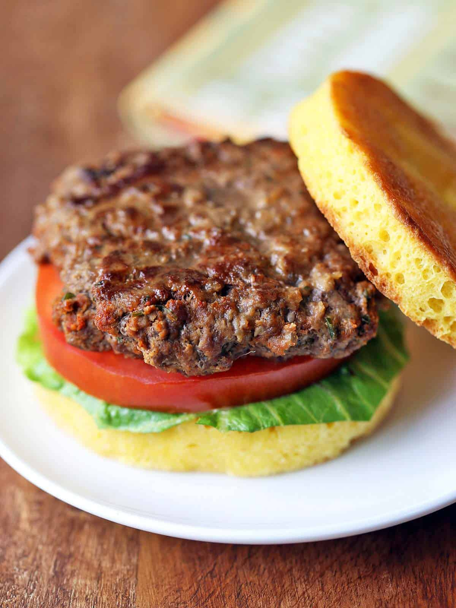

Bison Burger

Description
This recipe provides you with the right steps to cook
your favorite wild game meat and combine it into a classic
burger!
Prep Time: 15 minutes | Cook Time: 10 minutes |
Total time: 25 minutes | Servings: 4 burgers
Ingredients
- 1 pound lean ground bison
- 1 teaspoon Dijon mustard
- 1 teaspoon kosher salt
- 1/2 teaspoon black pepper
- 1 teaspoon onion powder
- 1 teaspoon garlic powder
- 1 teaspoon smoked paprika
- 1 teaspoon dried parsely
- 1/4 teaspoon cayenne pepper
- 1/4 cup Avocado Oil
Steps
- In a large bowl, use clean hands to mix the bison meta
and spices together until well-seasoned.
- Form four patties, each weighing 4 ounces, 3 inches in
diameter, and 1/2 inch thick. Make a dimple in the center
of each patty.
- Preheat a grill, a grill pan, or a dual-contact electric
grill over mediu-high heat. Spray or brush the grill surfaces
with oil.
- For medium doneness, grill the burgers for about 4 minutes
on each side or for a total of 4 minutes on a dual-contact
grill. Serve immediately.